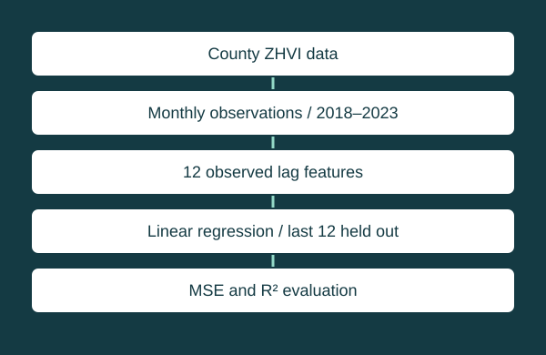

INFO400 — MongoDB® and Python®
Florida housing analysis
Turning monthly housing data into an inspectable regression workflow.

Implementation and evidence
The submitted Python script reads a county-level ZHVI CSV, reshapes monthly columns, filters 2018–2023, and creates twelve lag features for each county. It holds out the final twelve observations and fits linear regression on earlier observations. Source inspection confirms the workflow; the original analysis was not rerun for this portfolio.
Results and limitations
The academic write-up reports results for Duval and St. Johns counties. Those values have not been independently reproduced. The script prints the square root of mean squared error with an MAE label; that calculation is RMSE. This explanation corrects the interpretation without editing the submitted script.
Test features use observed preceding values, including observations within the held-out period. This is an evaluation with observed lags, not a recursive twelve-month forecast. Missing months can also change what a row-based lag represents. No deployment or investment-performance claim is made.
Read the preserved academic explanation